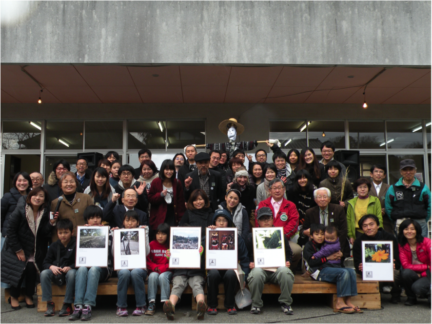
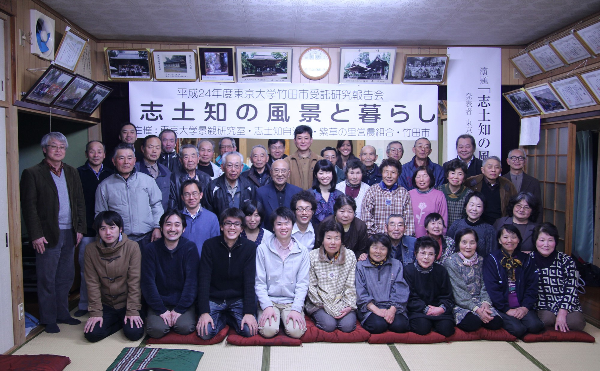

4年間に渡る受託研究を含めた5年間の研究活動の内容を「竹田文明論ノート」としてまとめ、これまでの研究活動成果として、竹田エコミュージアム構想の活動の一環である「竹田好いちょん博覧会」において、その内容を住民のみなさんへ発表しました。
竹田好いちょん博覧会（2014.3）
竹田の周縁部に広がる農村集落においても調査研究を行ってきました。山田は、田に水を供給する井路とそれを維持管理する共同体について、それぞれの近代化過程に関する調査を行い、中山間地域における農業の近代化と共同体の変遷の関連性についての分析を試みました。また、竹本は農村集落の１つである志土知地区を対象として、地域の住民から昔の暮らしや風景に関する口述記録を収集し、竹田の農村集落における風景と生活史に関する考察を行いました。志土知地区の研究報告会には、たくさんの地元の方々に来て頂き、研究成果についての発表を聞いて頂きました。
志土知公民館で開催した研究報告会（2013.3）
竹田の旧城下町エリアは、街路の骨格や幅員、街区の形状やスケールなど近世以来の空間構造をほぼそのままの形で保持しています。当研究室は、この歴史的空間構造そのものを竹田の恵まれた空間資産と考え、それをいかしたまちづくりの方向性に関わる研究を行いました。その成果にもとづいて、公共施設の整備を含むまちづくりの目標を、「竹田城下町ノート〜明日への情感まちづくり」という小冊子にまとめるとともに、市民フォーラムや公開シンポジウムの場を通じて市民に提案しました。提案したまちづくりの考え方の骨子は、市が進める城下町再生プロジェクト（公共空間整備、図書館の改築など）に組み込まれ、いまその具体化の議論が進められています。
（協働：東京大学生産技術研究所川添研究室）
城下町のフィールドサーベイの活動拠点：吉川屋前にて（2011.10）
2009年6月の首藤勝次市長の研究室訪問とまちづくりへの協力依頼をうけ、研究室と竹田市のつながりが始まり、同年より白水ダム現地調査、城下町、農村調査が開始されました。10月には白水ダム周辺整備に向けたデザイン提案の第1号プロジェクトとして鴨田駐車場、トイレ整備の設計が始まり、翌2010年10月に竣工しました。「白水ダム周辺整備計画 鴨田駐車場、トイレ整備」はグッドデザイン賞2011を受賞し、2011年11月現地にて受賞祝賀会が開催されました。
（協働：有限会社eau、川添善行・都市・建築・設計研究所、橋爪一級建築設計事務所）
鴨田駐車場・トイレの現地にて、グッドデザイン賞受賞祝賀会（2011.11）
・金井雄太／福井恒明
近世竹田における城下町設計の論理
土木学会論文集D 2013
景観・デザイン研究講演集 No.6 2010 pp.354-362
・山田裕貴／中井祐
竹田における農村景観の近代的変容と多層的共同体の関係性
景観・デザイン研究講演集 No.7 2011 pp.254-261
・永井友梨／尾崎信／中井祐
住民に共有される記憶の調査に基づく町の同一性に関する考察
景観・デザイン研究講演集 No.7 2011 pp.173-176
・竹本福子／福島秀哉／中井祐
農村集落における風景と生活史の変遷の記述
−大分県竹田市志土知地区を対象として−
景観・デザイン研究講演集 No.9 2013 pp.5-8